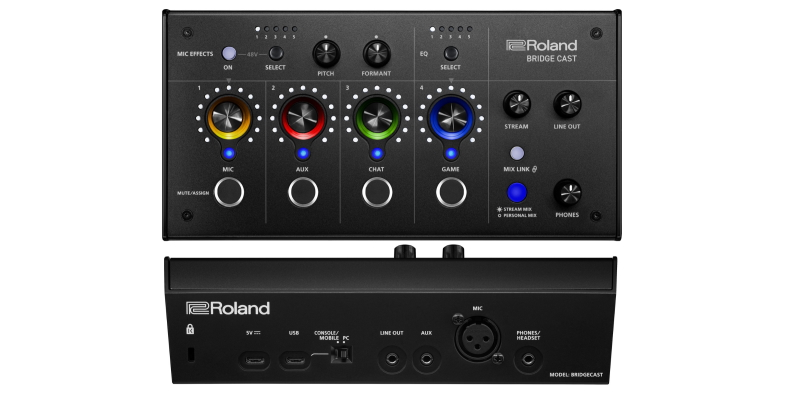
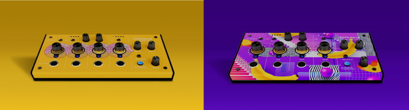

Заявлено, что новинка ориентирована для стримеров онлайн-игр, где потребуется несколько независимых звуковых миксов, таких как микрофон, голосовой чат, звуки игры и фоновая музыка. Девайс предлагает микрофонный предусилитель с входом на разъёме XLR, который имеет фантомное питание, а также такие эффекты и параметры как Voice Changer, Noise Suppressor, Compressor, De-esser, Reverb, Low Cut и Equalizer с пятью готовыми предварительными настройками.
Коммутационные возможности представляют из себя:
Кроме этого, пользователям предоставлен CHAT, GAME AUDIO и AUX с независимыми каналами и регуляторами. Стоит отметить, что BRIDGE CAST поставляется со специальной программой для манипуляций с эффектами, настройки голоса и доступа к заводским и пользовательским предустановкам.
Комплектация BRIDGE CAST включает:
В дополнение сообщается, что в будущем благодаря интеграции приложения интерфейса с Roland Cloud, пользователи получат доступ к крупной библиотеке звуков и бесплатной музыке, подготовленных специально для контент-мейкеров. Другая особенность устройства выражена в съёмной лицевой панели для возможности пользовательской персонализации с помощью загружаемого шаблона скина.